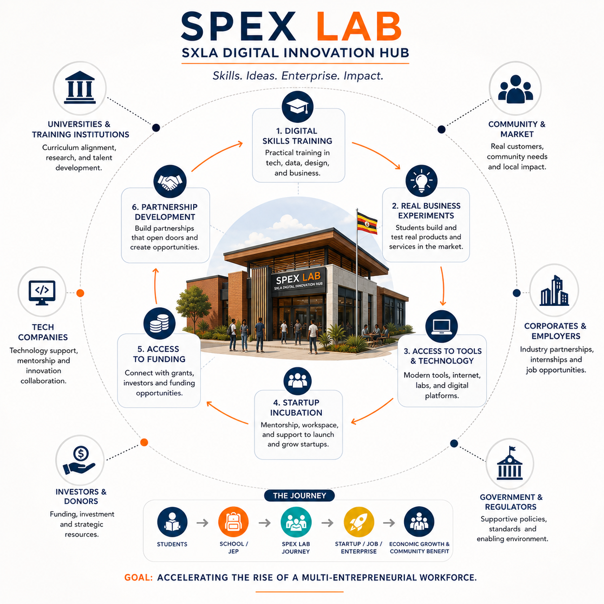
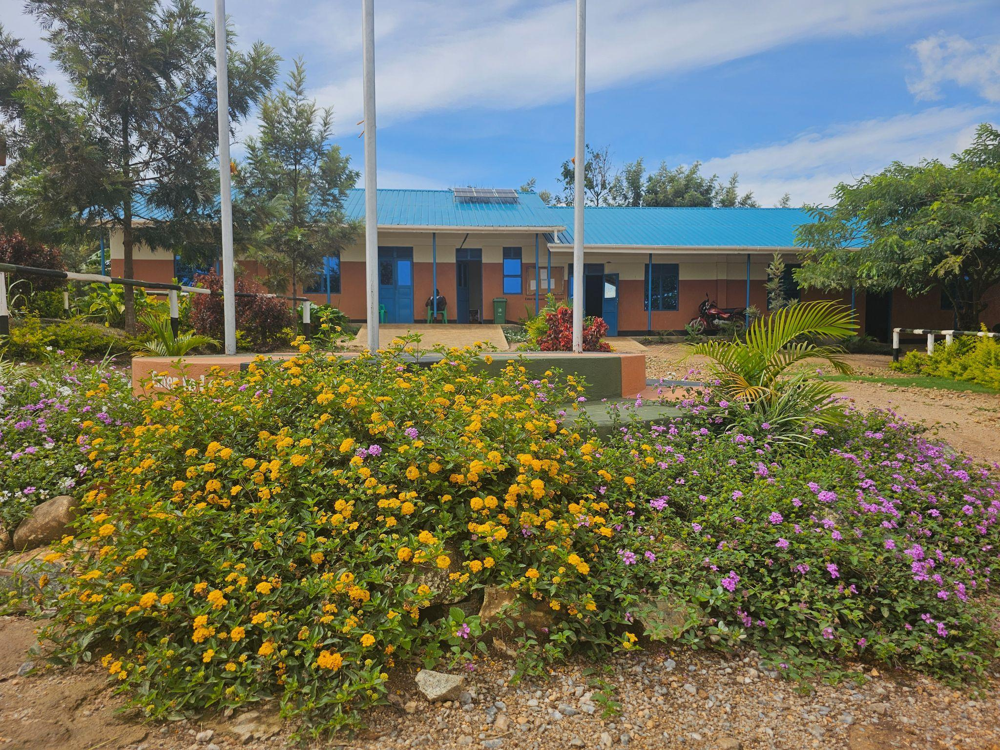
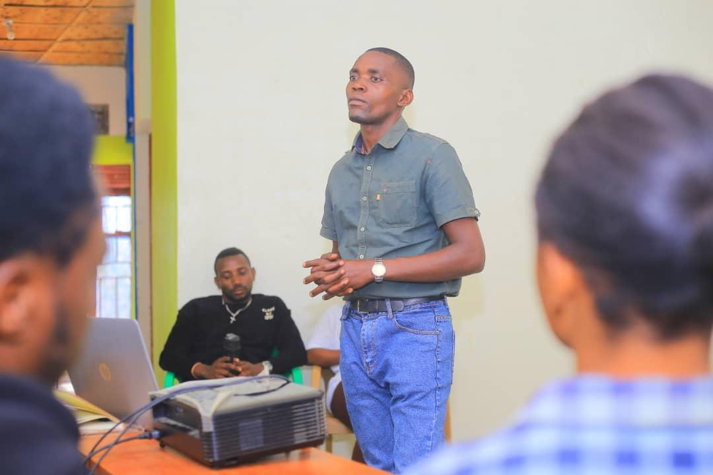
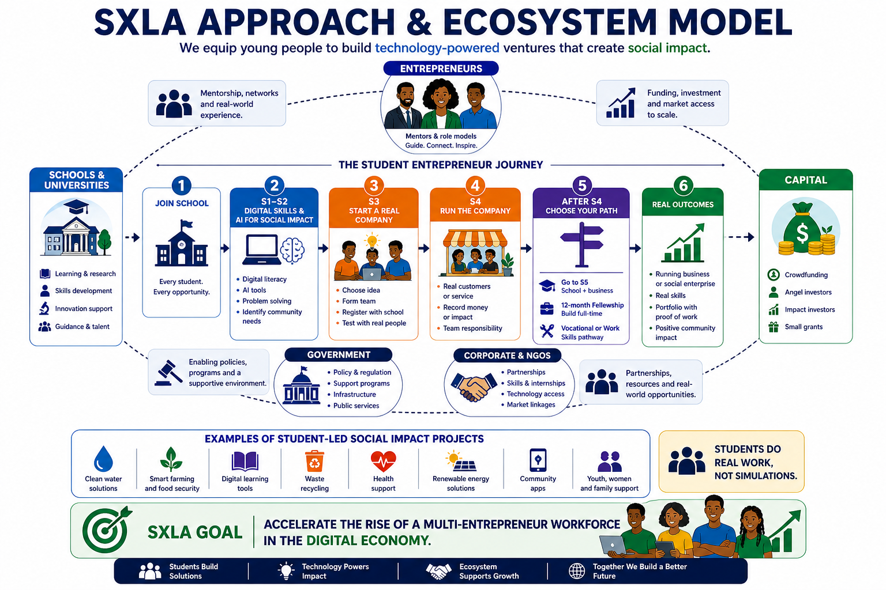
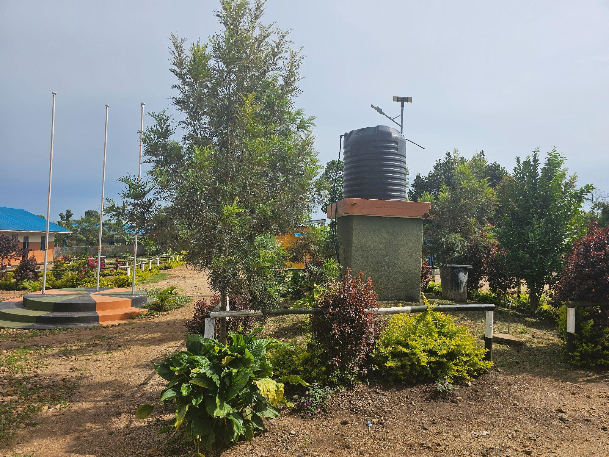

Projects
A pathway from school to company to scalable venture.
SXLA's programs are built to turn learning into practice: accredited education, digital fluency, real market experience, and a planned hub for post-secondary acceleration.


01
Spectrum Secondary School
Located at Kagoma, Block 11 in Kyangwali Refugee Settlement, the school delivers the Uganda National Curriculum from Senior 1 to Senior 4. It has grown from two students in its founding year to 277 enrolled learners as of March 2026.
The school targets 500 enrolled students by 2027 and 550 by 2028, with Senior 5 and Senior 6 A-Level provision planned.

02
Digital Skills and AI Integration
The Digital Skills Programme is integrated across the school years through digital foundations, AI tools and applications, and technology for business.
Claude and ChatGPT became active classroom tools for 100 pilot students in Term 1, 2026. SXLA is targeting full AI tool access for all 277 enrolled students by the end of 2026.

03
Junior Entrepreneurs Program
Senior 3 and Senior 4 students form and operate real companies with named leadership roles, written business plans, actual products or services, live market trading, recorded accounts, and termly reviews.
Five companies are active as of March 2026. The target is twenty active companies by the end of 2026.

04
Phase 1 Infrastructure Campaign
SXLA's USD 295,000 Phase 1 campaign funds an AI Innovation Lab with 20 workstations, dormitory extension, dining hall, solar upgrade, and water supply infrastructure.
Completed campus assets include permanent classrooms, a girls dormitory, laboratory, library, kitchen, and security fence on SXLA-owned land.
05
Spectrum Innovation Hub
The planned Hoima hub will provide hot desking, co-working, private offices, meeting rooms, a 20-workstation AI Innovation Lab, structured mentoring, Demo Days, and investor readiness support.
Construction is targeted to begin in 2028, with opening in 2029.